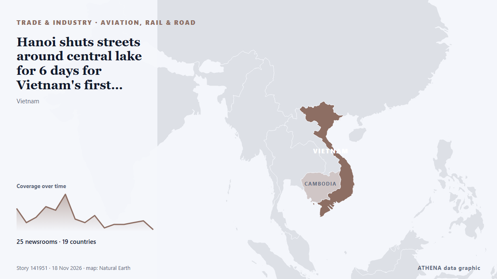

Αερομεταφορές, σιδηρόδρομος & οδικές
ΧορηγούμενοΠαρουσιάζεται από  Cybernetics and Artificial Intelligence Lab Welcome to the Cybernetics and Artificial Intelligence Laboratory, established at the Department of Business Administration of the National and Kapodistrian University of Athens. The lab is headed by Professor Dimitrios Thomakos. The lab aims to do research that can be published in top venues. Our research uses tools and methods of Artificial Intelligence, and lies in the following areas: - Forecasting - Decision making - Cyber security - Finance We are always looking forward to collaborating with exceptional students!
Cybernetics and Artificial Intelligence Lab Welcome to the Cybernetics and Artificial Intelligence Laboratory, established at the Department of Business Administration of the National and Kapodistrian University of Athens. The lab is headed by Professor Dimitrios Thomakos. The lab aims to do research that can be published in top venues. Our research uses tools and methods of Artificial Intelligence, and lies in the following areas: - Forecasting - Decision making - Cyber security - Finance We are always looking forward to collaborating with exceptional students!
| 6 Νοε | 0 |
|---|---|
| 7 Νοε | 0 |
| 8 Νοε | 0 |
| 9 Νοε | 0 |
| 10 Νοε | 0 |
| 11 Νοε | 0 |
| 12 Νοε | 0 |
| 13 Νοε | 0 |
| 14 Νοε | 0 |
| 15 Νοε | 4 |
| 16 Νοε | 8 |
| 17 Νοε | 9 |
| 18 Νοε | 2 |
| 19 Νοε | 0 |
Οι τίτλοι των ειδήσεων παρουσιάζονται στα αγγλικά, όπως δημοσιεύτηκαν.

Hanoi shuts streets around central lake for 6 days for Vietnam's first Culture Day
Hanoi police are closing streets around Hoan Kiem Lake to traffic from Wednesday until Monday next week for the opening of Vietnam Culture Day celebrations. από VnExpress International
British Airways Plane Gets Stuck In Mud After Veering Off Heathrow Taxiway
Reacting to the incident, a spokesperson for BA said, "We're very sorry to our customers for the disruption to their flight." από NDTV World
FAA halts installation of routers that led to ground stop
The Federal Aviation Administration has paused the installation of the routers that were linked to last week’s national ground stop, and turned off any Juniper routers that were already installed. από The Korea Times
Airbus expects Central Asian passenger traffic to nearly triple by 2045
Passenger traffic in Central Asia is projected to nearly triple over the next 20 years, rising from 89 billion revenue passenger-kilometers in 2025 to 242 billion by 2045, according to Airbus. από Kun.uz (English)
SJ to relaunch night train to Berlin via Copenhagen from December this year
Sweden's national rail company SJ has announced that it is restarting the night train between Stockholm and Berlin, travelling via Copenhagen, this time with a longer train and only three departures… από The Local Denmark
Trump seeks US$50 billion for US aviation overhaul after chaos
A nationwide technical failure brought US air travel to a standstill on Nov 13. από The Straits Times
Dubai airport passenger traffic falls 28.1% in first 9 months of 2026
RIYADH: Passenger traffic through Dubai International Airport fell 28.1 percent year on year in the first nine months of 2026, while third-quarter volumes declined 22.1 percent, as earlier… από Arab News
Did a single router bring US air travel to a standstill? Investigators seek answers
US Transportation Secretary Sean Duffy said Monday that investigators have yet to determine why a router installed by L3Harris Technologies at a remote facility in Arkansas triggered a nearly… από Israel Hayom (English)
Marriott Bonvoy Sign-Ins Were Down for Hours
Marriott’s website and app briefly blocked loyalty member log-ins Tuesday. από Skift
Five people injured amid severe turbulence on JetBlue flight to Florida
Some passengers were taken to hospital after flight safely landed at Fort-Lauderdale-Hollywood airport Five people were injured when severe turbulence struck a JetBlue flight landing in Florida on… από The Guardian
Top four US airlines could face US$345 million hit from FAA ground stop
The estimate by brokerage Bernstein covers American, Delta, United and Southwest. από The Business Times
US probes why a router installation sparked mass flight grounding
The company L3Harris has said it is cooperating with the official investigation into what went wrong. από The Straits Times
United Airlines says ‘widespread’ system outage resolved
Airline acknowledges ‘technology issue that delayed flight departures’ in latest high-profile outage to affect Americans United Airlines said on Monday that it had resolved a widespread system… από The Guardian
US airports slowly return to normal after three days of disruption
US air travel was slowly returning to normal on Monday after three days of widespread disruption following an extraordinary no-takeoff order issued by US aviation authorities. από Africanews (English)
AirAsia, Malaysia Airports in US$122mil debt repayment talks
Malaysia Airports Holdings Bhd managing director Mohd Izani Ghani says discussions have been progressing well, with the operator prioritising settlement of the debt. από Free Malaysia Today
US air travel largely back to normal as funding fight brews
U.S. air travel largely returned to normal Monday after more than 18,000 flight cancellations over three days stemming from Friday's longest ground stop for 25 years, suspected to have been caused by… από The Korea Times
US air travel disruptions continue into third day
New York: US air travel disruptions continued for a third day with more than 5,200 flights already affected on Sunday, but Transportation Secretary Sean Duffy predicted a return to normalcy by Monday… από Deccan Herald
Trump Administration Asks for Billions to Overhaul FAA. Democrats Question How Money Was Spent
The Trump administration is requesting $50 billion to modernize the aging FAA air traffic control system following a nationwide flight grounding due to technical issues. από Arab News
Egypt puts first two Alstom trains into service on Cairo Metro Line 1
Egypt has put the first two new air-conditioned trains into service on Cairo Metro Line 1, marking the start of deliveries under a contract with French company Alstom to supply 55 trains as part of a… από Daily News Egypt